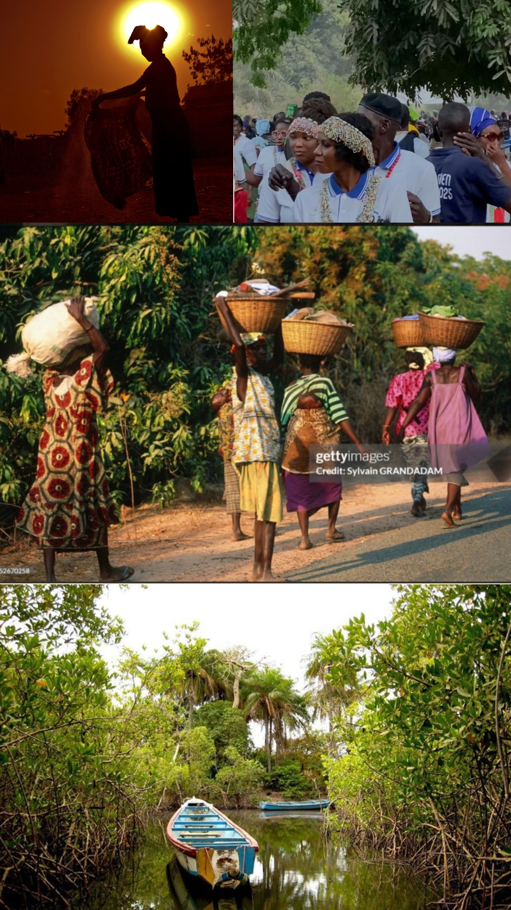

Visiter la Casamance : guide complet 2025

Quand partir en Casamance ?
La meilleure période est la saison sèche, de novembre à mai, lorsque les températures sont plus clémentes et les pistes praticables.
Météo mois par mois
De décembre à février, les températures sont douces (25-30°C) avec un ciel dégagé. À partir de mars, la chaleur monte progressivement jusqu'à la saison des pluies qui débute en juin.
Que faire sur place ?
Balade en pirogue sur le fleuve, visite des cases à impluvium du pays Diola, randonnée dans les mangroves et découverte de l'artisanat textile local — notamment les tissus wax dont s'inspirent nos collections Ndimbal Textile.
Se déplacer sur les pistes
Un véhicule tout-terrain est recommandé en dehors des grands axes, surtout en fin de saison sèche lorsque les pistes sont poussiéreuses.